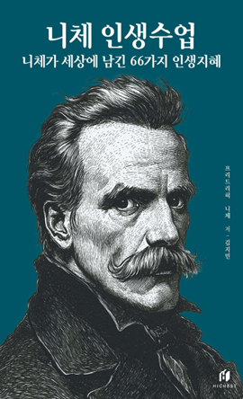

학습 목표
- 1. 니체의 생애와 그를 지탱해준 철학 이론을 통해 주도적인 삶을 살 수 있는 목적성을 찾을 수 있다.
- 2. 쉽게 풀어낸 니체 철학을 이해하고 지적 성장을 이룰 수 있다.
교육 특징
-
1. 어렵고 모호했던 니체 철학을 전문가만의 해석으로 쉽고 재미있게 학습
근대 철학가 중 최고의 철학가인 니체의 사상을 김재훈 작가님만의 해석과 통찰력으로 이해하기 쉽고 재미있게 풀어낸 강의 구성
-
2. 예술과 철학의 조화를 꿈꾸는 김재훈 작가님만의 명강의
올림포스 연대기, 만화로 보는 3분 철학 등 예술과 철학 모두에 조예가 깊은 김재훈 작가님의 명강의를 유려한 영상으로 담아낸 콘텐츠
-
3. 현대 직장인의 지적 허기를 채워줄 수 있는 명품 강의
니체를 접하고 싶어도 이해하기 어렵고 모호해서 망설였던 당신의 지적 호기심을 쉽고 재미있게 충족시킬 수 있는 명품 강의 구성
교육 대상
- 1. 기업체 전 임직원
- 2. 니체의 철학을 통해 인사이트를 얻고 싶은 직장인
- 3. 니체의 식견으로 지적인 성장을 이루고 싶은 성인
강의 목차
- 제1장 19세기의 반항아, 니체를 만나다: 지루한 일상에 지친 당신에게 던지는 질문
- 제2장 신은 죽었다: 신 없이 살아가는 세상, 나만의 가치를 찾는 법
- 제3장 도덕의 계보: 도덕의 족쇄 벗어던지고 나만의 정신승리 찾기
- 제4장 허무주의와 실존주의: 허무한 현실 속에서 무력감과 소외감 극복하기
- 제5장 힘에의 의지: 진정 살고자 한다면 더 원하고 더 강해져라!
- 제6장 영원회귀를 통한 삶의 의미 재해석: 매일 반복되는 일상에 의미를 부여하자
- 제7장 위버멘쉬를 극복한 인간: 나를 넘어서는 성장을 위한 니체의 조언
- 제8장 땅에서의 삶과 아모르파티: 현실을 사랑하고 삶을 즐겨라
강사 소개
강사명
김재훈 작가
경력
연세대학교 커뮤니케이션 대학원 수료
홍익대학교 미술대학 졸업
홍익대학교 미술대학 졸업
참고 도서

도서명
니체 인생수업: 니체가 세상에 남긴 66가지 인생지혜
저자명
프리드리히 니체
도서소개
작고한 지 2세기가 지난 오늘날까지도 니체의 말들은 빛이 바래지기는 커녕
뛰어난 통찰력과 날카로움으로 우리를 매혹시키고 있다.
역사상 가장 위대한 철학자 중 하나로 꼽히는 프리드리히 니체의 글 가운데, 엄선하고 또 엄선한 66편의 명언을 담은 책이다. 니체가 당신에게 담담한
위로와 희망의 말을 건넨다.